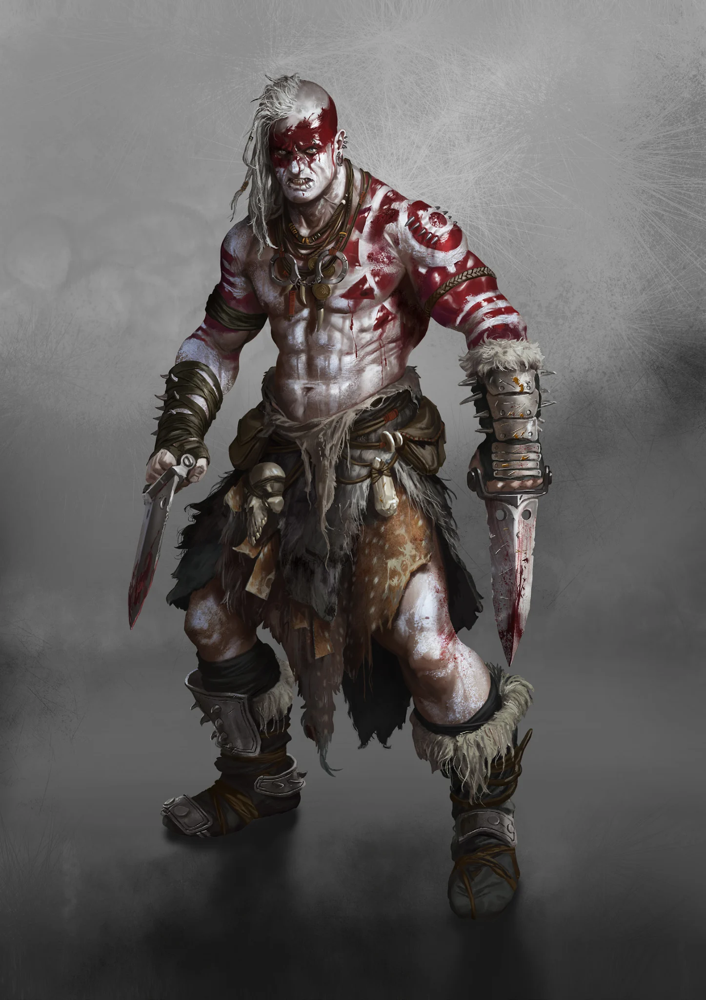

Leaders
- Too diverse and numerous to list
CULT DOSSIER
Rulers of the Wasteland
+1 to maximum skill level

THE CLANS
The vast differences between Clans make it impossible for this entry to contain every rule and rank structure used by individual Clans. This entry highlights the dominant low-technology hunter/gatherer model. Additional entries may define specific Clans in greater detail.
Clanners are not one people, one faith, or one organization. They are countless families, tribes, settlements, and confederations that survived outside the great Cults and built their own ways of life from the ruins. One Clan may worship the sun and fight with spears; another may preserve contracts, firearms, machinery, and laws inherited through generations.
What unites them is belonging. A Clanner is shaped first by family, territory, work, memory, and obligation. The Clan feeds its members, protects them, gives them a name, and remembers the dead. In return, the individual is expected to strengthen the whole.
After the Eshaton, loners had little chance. Survivors gathered in families, bunkers, caves, basements, and improvised communities where every pair of hands mattered. People learned to watch one another's backs, hunt, trap, fight, ration food, and defend whatever shelter remained.
Ability first determined a person's worth. As generations passed, birth, sex, lineage, custom, and inherited roles often hardened into tradition. Clans developed rules suited to the dangers around them and punished those who threatened their survival.
Eventually survival became culture. A group of survivors became a family, a family became a Clan, and the Clan acquired a history. Some took names from their homeland, others from a craft, resource, ancestor, or defining achievement. What began as necessity became identity.
Life inside a Clan is built around mutual dependence. Hunters bring meat. Gatherers know when the land can feed the people and when trade is necessary. Scouts watch borders and enemy movements. Warriors train so others do not have to. Shamans or Sages preserve stories, customs, laws, and the meaning of the Clan itself.
This solidarity can be fiercely protective, but it also places limits on personal freedom. Marriage, labor, inheritance, feuds, and leadership may all be governed by tradition. Someone who refuses an expected role may not be seen as an individual making a private choice, but as a danger to everyone depending upon that role.
Clans range from a few related families to powers capable of threatening established Cults. A small family may number only a dozen or two people and depend upon marriage with outsiders to survive. Extended families can number more than a hundred and require strict organization simply to feed everyone.
Larger Clans control territory, settlements, resources, and bloodlines. At the highest scale, several Clans may merge through negotiation, necessity, conquest, or marriage to form a tribe. Such alliances bring strength but also constant struggles over precedence and leadership.
Their economies are equally varied. One Clan may depend on cattle, hunting, fishing, or fertile land. Another digs coal or minerals from a mine, exploits a ruin field, occupies an ancient bunker, or survives by raiding farms and caravans.
Clans are often dismissed as primitive, but their technological and social development varies enormously. Some truly live with little more than spears, oral tradition, and spirit beliefs. Others maintain rifles, workshops, contracts, machinery, written law, or technical knowledge passed from one generation to the next.
The same role changes with the Clan. A Tribal Warrior in a poor settlement may be its strongest fighter; in a more advanced Clan, that position may belong to a technician or master of arms. A Shaman may interpret omens and bless warriors, while a Sage elsewhere preserves legal codes and enforces written agreements.
Tradition is not the opposite of adaptation. Customs survive because they once solved problems. When the world changes, some Clans change with it. Others cling to old answers even after the problem itself has disappeared.
Clanners know their homelands intimately. Hunters read tracks and migrations. Gatherers know plants, water, seasons, trade routes, and neighboring peoples. Scouts disappear into swamps, forests, tunnels, and ruins to watch for danger.
Many Clans remain nomadic, following herds or moving when land can no longer sustain them. Others have occupied the same valley, ruin, riverbank, or estate for centuries. To outsiders the wasteland may be empty space between cities; to a Clan it is divided by hunting grounds, burial sites, paths, sacred places, old grudges, and remembered borders.
A new road, toll station, garrison, plantation, or ruin claim may therefore cut directly through something a family has considered its own for generations.
Common roles recur across many Clans even when titles differ. Scouts defend borders and learn the land. Hunters and Gatherers feed the people and maintain outside contacts. Tribal Warriors and Shamans embody the Clan's strength and traditions.
Chieftains rise through force, wisdom, diplomacy, or proven service. Champions become living examples of what the Clan admires: warriors in one society, engineers or artists in another. Their deeds may be remembered for generations.
A Founder stands beyond ordinary leadership. Through diplomacy, conquest, or force of personality, a Founder unites separate families or Clans into something new and may create a power large enough to disturb balances that have stood for centuries.
Clanners live in territories claimed by larger institutions and therefore experience the Cults differently from region to region. Anabaptists may help work fields. Spitalians can provide medicine. Neolibyans bring trade and wealth, but also exploitation. Chroniclers desire artifacts from Clan territory. Hellvetics control passes that nomads once crossed freely. Jehammedans may offer protection while demanding conversion.
Relations with Judges can become especially violent in Borca. The Protectorate imposes Justitian's law upon territories whose inhabitants already possess laws, leaders, and histories of their own. To a Judge, resistance may be criminality. To a Clan, the same confrontation may be defense of family and land.
No single Clanner opinion exists because no single Clanner people exists. One Clan's ally may be another's ancestral enemy.
Powerful Cults have long treated many Clans as populations to be converted, taxed, recruited, displaced, or ignored. That assumption is becoming dangerous.
Across Borca, old identities are strengthening and elders are being heard again. Clans that once tolerated outside rule are renewing old claims and remembering grievances. Beyond the Reaper's Blow, Praha's fall has drawn large Clans toward the city and destabilized the surrounding lands with feuds, migrations, and competition.
Similar pressures appear elsewhere. Frankan Clans fight Pheromancers for their homes, while mountain peoples and nomads confront powers that control territory and routes they once considered their own.
The Clans remain divided, but division does not mean weakness. Every alliance, marriage, shared enemy, or successful Founder creates the possibility that several families may begin acting as one.
Clanners preserve forms of human life that no great Cult designed. Their customs can carry practical wisdom, family memory, local knowledge, craftsmanship, and identities stretching back centuries. The Clan can provide belonging stronger than any distant institution.
That same belonging can demand obedience. Tradition may protect a people or trap them. Blood ties can create loyalty or endless feud. A Chieftain can defend a community or rule it through fear. Outsiders may truly bring medicine, law, trade, or knowledge while simultaneously threatening everything that makes the Clan distinct.
A Clanner character therefore begins with a question larger than personal survival: what does the Clan have the right to demand from one of its own?
The answer may determine whether the character becomes its protector, its reformer, its exile, or the Founder of something entirely new.
THE CLAN
This rank structure represents the dominant hunter/gatherer model. Select any rank to read its complete entry.
BLOOD & TRADITION
TOOLS OF SURVIVAL
Open or close each equipment group to focus the reference.